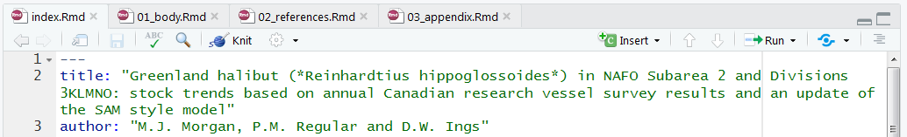

NAFOdown is an R package designed to simplify the process of creating and updating NAFO documents. The package utilizes the bookdown package which facilitates the integration of Markdown syntax and R code and, as such, effectively provides a “one-stop-shop” tool through which analyses, plots, tables, and text can be written in parallel and knit into a stand-alone and reproducible document. Such a workflow minimizes the significant amount of manual effort associated with copying and pasting data, summary statistics and plots from one program to another. By linking input data directly with the body of the text and to figures and tables, documents can be automatically updated to include additional years of data; this may be of particular value to Designated Experts as they update interim monitoring reports and other assessment documents. This approach also minimizes the amount of time spent on formatting documents as the NAFOdown package, like the csasdown and thesisdown packages which this package is based on, includes templates that conform to formatting guidelines. Specifically, NAFOdown includes templates for producing SCR, STACFIS, and SCS documents in Word format. Here we demonstrate how to use this package.
Installation
The statistical computing program R is required to use the NAFOdown package and we highly recommend using RStudio to manage R projects. With RStudio installed a project can be started in an existing or new directory using the drop-down menus in Rstudio. After setting up a project, Rstudio will generate a .Rproj file which will automatically set the working directory to the project folder when this file is opened. This will simplify the process of telling R where to find the files needed for the report.
NAFOdown can be installed via GitHub using this code:
# install.packages("remotes")
remotes::install_github("nafc-assess/NAFOdown")Starting a document
A skeleton of a NAFO document will be produced and stored in your working directory by running this code:
getwd() # this is where files and folders of the skeleton will be saved
NAFOdown::draft(report_type = "SCR")The type of skeleton produced can be changed by changing the report_type argument from "SCR" to "STACFIS" or "SCS". The components of the skeleton are outlined below. Note that all of the files included in the skeleton are text based and can be opened and edited using RStudio.
Components of the skeleton
index.Rmd
This is a key file that contains all the meta information that defines much of the formatting of the document as well as the information for the beginning of the document. Several of these items will need to be edited, such as the author, title, etc.
01_body.Rmd, 02_references.Rmd, etc.
These are the .Rmd files for each section of the report. These files will hold all the markdown text and R code (e.g. tables and figures) needed to produce the document. Note that the SCR template includes a series of .Rmd files (01_body.Rmd, 02_references.Rmd, and 03_appendix.Rmd), as these reports can be extensive, while the STACFIS and SCS templates are simpler and only includes a body.Rmd file.
_bookdown.yml
This file outlines the .Rmd files to be combined by bookdown. This is also where some options are modified such as the prefix for table and figure captions (e.g. Figure instead of Fig.). Depending on the use case, specific components may not be needed and these files can be excluded from the .Rmd file list contained within this file (e.g. appendix.Rmd). Alternatively, for extensive SCR documents, it may be useful to create and specify separate 01_introduction.Rmd, 02_methods.Rmd, 03_results.Rmd, and 04_discussion.Rmd files in lieu of one large 01_body.Rmd.
csl
This folder holds the style files for bibliographies, specified using a citation style language file (.csl). Currently, SCR documents will follow the Harvard citation format. This folder is not included in the STACFIS or SCS templates as references are rarely used.
bib
BibTeX references are to be included in the refs.bib file inside this folder. BibTeX entries can be exported from most journal web-pages, Google scholar and from reference managers such as Zotero. Copy this text into the refs.bib file and note the tag used for each entry as this is what will be used to reference specific papers. Also consider using the Rstudio citr add-in to simplify the insertion of citations.
Writing
Markdown
NAFOdown is built upon the bookdown package which is built upon R markdown. In short, R markdown provides a reproducible authoring framework for scientists as a single file can be used to embed chunks of code from R, and other coding languages, into a Markdown document. Markdown is a simple plain text formatting syntax that can be converted to a wide range of outputs, such as HTML and pdf. The format is easy-to-read and the fact that it detaches writing from formatting allows authors to focus on writing. Pairing R with Markdown creates a very flexible and efficient platform for producing a wide range of documents. See the bookdown book on bookdown for more details on its capabilities (https://bookdown.org/yihui/bookdown/).
Tables
Tables included in NAFO documents are often extensive and, as such, we recommend the use of the flextable package. Tables produced using this package are highly customizable and a theme function, NAFOdown::theme_nafotabs(), has been added to this package to facilitate consistent formatting of tables in NAFO documents.
Figures
NAFOdown also includes a ggplot2 theme, NAFOdown::theme_nafo() to aid the consistent formatting of figures. The theme is specific to the ggplot2 package because it is a widely used package that is extremely flexible and capable of producing figures typically used in NAFO documents. While theme_nafo() provides a consistent base format, the flexibility remains to customize components to suit the specific requirements of the author though modification of individual theme elements within the ggplot2 framework (e.g. font size, legend formatting).
Meeting-to-meeting writing
As noted above, several of the files need to be populated with content. In most cases, the body.Rmd file will hold most of the content and take the most time to draft. Moreover, these documents may evolve over time. Managing a series of drafts can be a cumbersome task and, as such, we recommend that versions are tracked using a version control system such as Git. Rstudio integrates nicely with Git and the hosting service GitHub, and thereby provides a platform for syncing versions with an online repository (i.e. this acts as a back-up and facilitates remote collaboration). For a gentle guide to getting starting with using Git and GitHub with R and RStudio, see http://happygitwithr.com/.
Rendering
To render a NAFO report in Word format, open index.Rmd in Rstudio and click the “knit” button:

Documents can also be rendered in the R console, assuming the working directory is set to the directory holding the index.Rmd file, using bookdown’s render function:
bookdown::render_book("index.Rmd")The rendered Word file will be saved in the _book/ directory. When all files are populated with the necessary content, the output will look similar to past documents:

While there is an initial cost to building these documents, they will be much easier to update following the addition of new data as all tables and figures should automatically update. This workflow will also improve the transparency and reproducibility of the work, especially if changes are tracked using git.
Documents prepared using NAFOdown
Gullage, N., Regular, P. M., and Varkey, D. (2023). Update of base case SSM and investigation of impacts of EU-spain 3L survey data for greenland halibut in NAFO subarea 2 and divisions 3KLMNO. NAFO SCR Doc, 23/014. https://www.nafo.int/Portals/0/PDFs/sc/2023/scr23-014.pdf
NAFO. (2020a). Greenland halibut in SA2 + Divs. 3KLMNO: conduct an update assessment, compute the TAC using the agreed HCR and determine whether exceptional circumstances are occurring (COM request #2). In Report of the Scientific Council, 28 May -12 June 2020, By correspondence. NAFO SCS Doc, 20/14, Pages 19–31. https://www.nafo.int/Portals/0/PDFs/sc/2020/scs20-14.pdf
NAFO. (2020b). Greenland Halibut (Reinhardtius hippoglossoides) in Subarea 2 + Divisions 3KLMNO. In Report of the Scientific Council, 28 May -12 June 2020, By correspondence. NAFO SCS Doc, 20/14, Pages 221–223. https://www.nafo.int/Portals/0/PDFs/sc/2020/scs20-14.pdf
Perreault, A. M. J., Wheeland, L., and Cadigan, N. G. (2021). Updated state-space model for American plaice (Hippoglossoides platessoides) in Div. 3LNO. NAFO SCR Doc, 21/020. https://www.nafo.int/Portals/0/PDFs/sc/2021/scr21-020.pdf
Perreault, A., Rogers, B., González Troncoso, D., Rideout, R., Simpson, M., Dwyer, K., and Varkey, D. (2022). Data review for 3LN redfish in preparation for an updated management strategy evaluation. NAFO SCR Doc, 22/016. https://www.nafo.int/Portals/0/PDFs/sc/2022/scr22-016.pdf
Perreault, A., Rogers, B., and Varkey, D. (2023). Data selection for 3LN redfish in preparation for an updated management strategy evaluation. NAFO SCR Doc, 23/001. https://www.nafo.int/Portals/0/PDFs/sc/2023/scr23-001.pdf
Regular, P. M. (2020). Update of Base Case SSM for Greenland Halibut in NAFO Subarea 2 and Divisions 3KLMNO. NAFO SCR Doc, 20/050. https://www.nafo.int/Portals/0/PDFs/sc/2020/scr20-050.pdf
Regular, P. M. (2023). Data proposed for use in Operating Models for the 2023 Management Strategy Evaluation Review for Greenland Halibut in NAFO Subarea 2 and Divisions 3KLMNO. NAFO SCR Doc, 23/007. https://www.nafo.int/Portals/0/PDFs/sc/2023/scr23-007.pdf
Regular, P. M., Butterworth, D., and Rademeyer, R. (2022). Effect of missing values from the Canadian spring and fall surveys of NAFO Divisions 3LNO on the calculation of the TAC using the Greenland halibut HCR. NAFO SCR Doc, 22/015. https://www.nafo.int/Portals/0/PDFs/sc/2022/scr22-015.pdf
Regular, P. M., Koen-Alonso, M., Yalcin, S., Perreault, A. M. J., and Wheeland, L. J. (2022). Approximating uncertainty around indices from stratified-random trawl surveys using the Gamma distribution. NAFO SCR Doc, 22/043. https://www.nafo.int/Portals/0/PDFs/sc/2022/scr22-042.pdf
Regular, P. M., Perreault, A. M. J., Rideout, R. M., Rogers, B., and Wheeland, L. J. (2022). Exploratory analysis of disparate survey indices of Greenland halibut (Reinhardtius hippoglossoides) in NAFO divisions 2+3KLMNO. NAFO SCR Doc, 22/042. https://www.nafo.int/Portals/0/PDFs/sc/2022/scr22-042.pdf
Regular, P. M., Rademeyr, R., D., V., D., B., and C., F. (2020). Correcting mis-calculated values of J*targe**t for use in the Greenland halibut HCR. NAFO SCR Doc, 20/042*. https://www.nafo.int/Portals/0/PDFs/sc/2020/scr20-042%20.pdf
Regular, P. M., Rideout, R. M., and W., I. D. (2020). Impact of missed strata on abundance-at-age estimates of Greenland halibut from the Canadian fall 2J3K and spring 3LNO surveys in 2018. NAFO SCR Doc, 20/005 REV. https://www.nafo.int/Portals/0/PDFs/sc/2020/scr20-005REV.pdf
Regular, P. M., Rogers, B., and Morgan, M. J. (2021). Greenland halibut (Reinhardtius hippoglossoides) in NAFO Subarea 2 and Divisions 3KLMNO: stock trends based on annual Canadian research vessel survey results. NAFO SCR Doc, 21/026. https://www.nafo.int/Portals/0/PDFs/sc/2021/scr21-026.pdf
Rogers, B., Perreault, A., Simpson, M., and Varkey, D. (2022). Assessment of 3LN redfish using the ASPIC model in 2022 (Sebastes mentella and S. fasciatus). NAFO SCR Doc, 22/013. https://www.nafo.int/Portals/0/PDFs/sc/2022/scr22-013.pdf
Rogers, B., and Simpson, M. (2020). Canadian Research Report for 2019. NAFO SCS Doc, 20/11. https://www.nafo.int/Portals/0/PDFs/sc/2020/scs20-11.pdf
Contributing
This is an open project and we welcome constructive feedback. Please report problems and/or make suggestions under the issues page. Also feel free to activity contribute to the package by submitting changes under the pull requests page. Please note that the NAFOdown project is released with a Contributor Code of Conduct. By contributing to this project, you agree to abide by its terms.